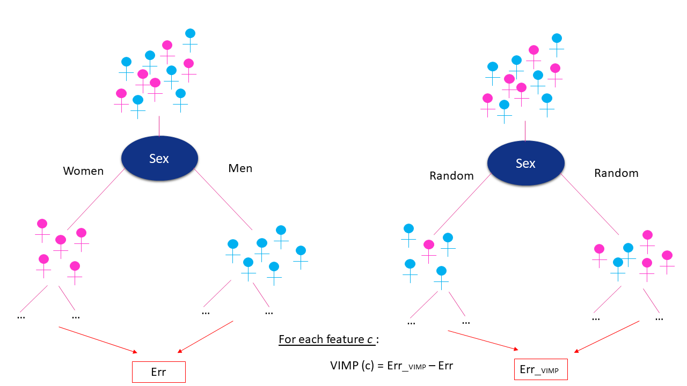

Before you can understand how Random Survival Forests work you must first be familiar with how Breiman Forests and Random Forests work
[See chapter on trees].
The Random Survival Forest (RSF) method is a random forest method for survival analysis with right-censored data, presented by Ishwaran in 2008 [1].
The difference between the standard random forest method and RSF is that every aspect of the RSF construction takes into account the output (survival, censoring).
The characteristics of RSFs are as follows:
The output of the model: mortality
In the leaves the target values (class, time, risk value, survival curve) are calculated. In his paper Ishwaran proposes to calculate mortality.
It is calculated using the CHF estimator corresponding to the Nelson-Aalen estimator.
$$ \hat{H}_{h}(t) = \sum_{t_{k,h} \leq t} \frac{d_{k,h}}{Y_{k,h}} $$
With \( \hat{H}_{h}(t)\) the CHF at node h and time t, \(d_{k,h}\) the number of deaths at time \(t_{k,h}\) and \(Y_{k,h}\) the number of individuals at risk
at time \(t_{k,h}\).
In each node h, all individuals i have the same CHF. The mortality \(M_{i}\) of an individual i in node h, corresponds to the sum of the CHF over each
unique time of the data.
$$ M_{i} = \sum_{k=1}^{m} \hat{H}_{h}(t_{k}|X_{i})$$
The higher the mortality compared to other individuals, the greater the risk of an event (the event may be death, relapse or both in the case of PFS
(Progression-Free Survival) for example).
The evaluation method: the Cindex
To evaluate the tree we use the prediction error which corresponds to 1 minus the concordance index
(c-index). The c-index indicates the rate of possible pairs that are well ordered.As described in Ishwaran and al. paper, the C-index is calculated using the following steps:
Form all possible pairs of cases over the data.
Omit those pairs whose shorter survival time is censored. Omit pairs i
and j if Ti = Tj unless at least one is a death. Let Permissible denote the
total number of permissible pairs.
For each permissible pair where Ti 6= Tj , count 1 if the shorter survival
time has worse predicted outcome; count 0.5 if predicted outcomes are
tied. For each permissible pair, where Ti = Tj and both are deaths, count 1
if predicted outcomes are tied; otherwise, count 0.5. For each permissible
pair where Ti = Tj , but not both are deaths, count 1 if the death has
worse predicted outcome; otherwise, count 0.5. Let Concordance denote
the sum over all permissible pairs.
The C-index, C, is defined by C = Concordance/Permissible.
The method of separation of nodes: the Logrank
Ishwaran presents 4 methods of node separation:
The log Rank: for each characteristic θ of the subset \( X_{in} \), and for different valuesc of this characteristic,
we calculate the value of the logRank test for the separation of the group of patients in two by the given characteristic with the threshold at the given value.
The log rank is calculated on the survival data of the patients. The best feature will be the one with the highest log rank result and the separation into child
nodes will be done at the threshold that gives the highest log rank result. Let us define that when \( \theta_{ij} \leq c \) the individual i is registered
in the left child node, and in the right child node otherwise.
Let \(t_{1} < ... < t_{m}\) the distinct times of the events in node h, \(d_{k,l}\) and \(Y_{k,l}\) respectively the number of events and the number of
individuals at risk at time \(t_{k}\) in the left child node (\(d_{k, r}\) and \(Y_{k,r}\) for the right child node), \(Y_{k,s}\) the number of individuals in
the child nodes (with \(s \in {l , r\}\)) who had no events at time \(t_{k-1}\). Let us define \(Y_{k} = Y_{k,l} + Y_{k,r}\) and \(d_{k} = d_{k,l} + d_{k,r}\).
Let us call \(n_{s}\) the total number of individuals in the child node s, and \(n=n_{l}+ n_{r}\).
The value of the logRank test for the variable $\tau$ and the value c is :
$$ L(\theta,c) = \frac{\sum_{k=1}^{m} (d_{k,l} - Y_{k,l} \frac{d_{k}}{Y_{k}})}{\sqrt{\sum_{k=1}^{m} \frac{Y_{k,l}}{Y_{k}} ( 1-\frac{Y_{k,l}}{Y_{k}})d_{k}}}$$
The absolute value of \(L(\theta,c)\) measures the separation. The higher it is, the better the difference between the two groups [Segal (1988), LeBlanc and Crowley (1993)].
The random logrank: this method is equivalent to the logrank but there is, here, no test on different values.
Only one random value is taken for each characteristic.
The conserve rule: A conservation-of-events splitting rule where nodes are split by finding daughters closest to the conservation-of-events principle.
The logrankscore: this method is equivalent to the logrank but using a standardized log-rank statistic [Hothorn and Lausen (2003)].
The importance of the variables
VIMP (Variable importance): The article by Ishwaran et al [1] gives a method for calculating the importance of variables (VIMP).
Its calculation consists of, for each characteristic :
Reconstruct the trees using the feature using OOB. When a node h uses
assign the individuals of node h randomly into the child nodes. Recalculate the prediction error
errvimp associated with the new forest.
VIMP = errvimp - erroob

Explanation of the VIMP calculation with the example of the gender feature.
The larger the value of the VIMP, the more predictive value the feature has.
MD (Minimal Depth): The minimal depth assesses the predictiveness of a variable assuming variables selected close to the root are
more important [2].
VH (Variable Hunting): It was defined for ultra-high dimensional problems. [2] An RSF is fit to a random subset of
data points, and a first group of variables is selected using minimal depth thresholding. Additional variables are then appended to the initial model in increasing order
of minimal depth until the VIMP criterium stabilizes. The process is repeated several times, to finally retain the variables that appear most frequently over the trials.
If you are interested about more details on the importance of variables in RSFs, you can check the references above.
References
[1] H. Ishwaran, U. Kogalur et al. Random surival forest. The annals of applied statistics, 2(3) :841–860 (2008).
[2] H. Ishwaran, U. Kogalur et al. High-dimensional variable selection for survival data. J Am Stat Assoc 105(489):205–217 (2010).